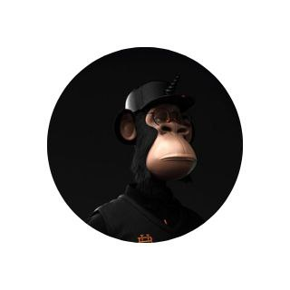

The Ape
Passionate website developer with expertise in HTML, CSS, JavaScript, MongoDB, Node.js, React, dedicated to creating secure and visually impressive web applications.
Education:
-
Secondary Education
- APE High School
- Graduated: [2018]
-
Diploma in Computer Sciences
- APE Technical Educations
- Graduated: [2021]
-
Bachelor's Degree
- APE University
- Graduated: [2024]
Work Experience:
Software Developer
Google (June 2024 - May 2028):
As a Software Developer at Google, I had the privilege of contributing to innovative projects and collaborating with a world-class team. My responsibilities included developing cutting-edge software solutions, optimizing system performance, and participating in complex problem-solving, all while adhering to Google's high standards of excellence.
Microsoft (May 2028 - Present):
Currently, I continue my journey in the tech industry as a Software Developer at Microsoft. In this role, I work on designing and developing software solutions that align with Microsoft's mission to empower individuals and organizations worldwide through technology. I thrive on the dynamic and challenging environment, where I apply my expertise to create impactful software solutions.
Skills:
-
Full-Stack Development:
- Front-end Development:
- Proficient in HTML, CSS, JavaScript
- Skilled in front-end frameworks like React, Angular, or Vue.js
- Creating responsive and interactive user interfaces
- Back-end Development:
- Experience with Node.js, Python, Ruby, PHP, or Java
- Server setup and application logic
- Database management (MongoDB, MySQL, PostgreSQL)
- API integration for data exchange
- Version control using Git
Awards and Certifications:
Academic Excellence Award
- Awarded for outstanding academic performance during your educational journey.
- Recognizes your commitment to learning and achieving excellence.
Outstanding Achievement in Web Development
- Received for exceptional contributions in the field of web development.
- Highlights your skills and accomplishments in the web development industry.
AWS Certified Solutions Architect
- Demonstrates your expertise in designing and deploying scalable and reliable applications on the Amazon Web Services (AWS) platform.
Scrum Master Certification (CSM)
- Validates your knowledge and skills in agile project management and the Scrum framework, which is widely used in software development.
To access my contact information, please click on the following link: Contact Me
Please feel free to reach out to me if you have any questions or would like to get in touch for job opportunities or inquiries. Thank you!